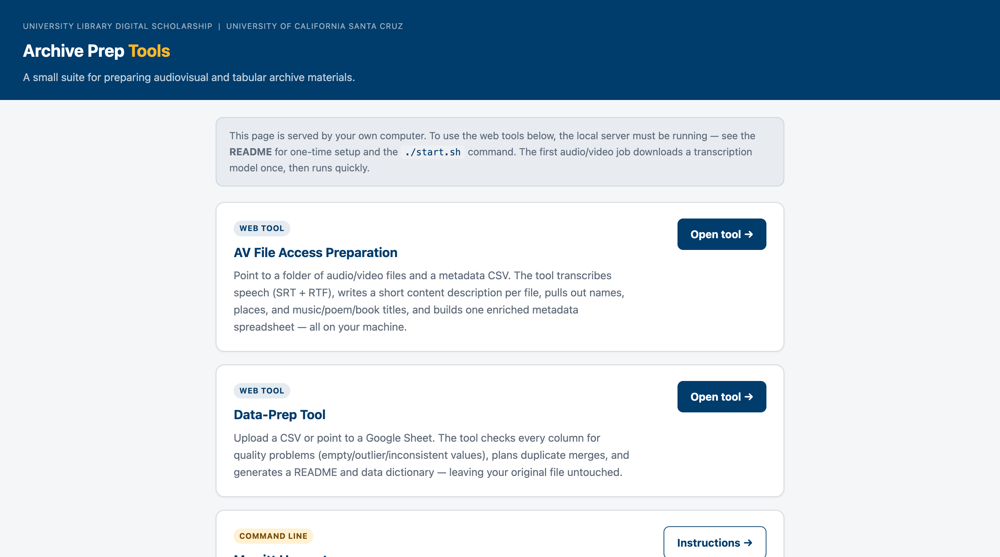
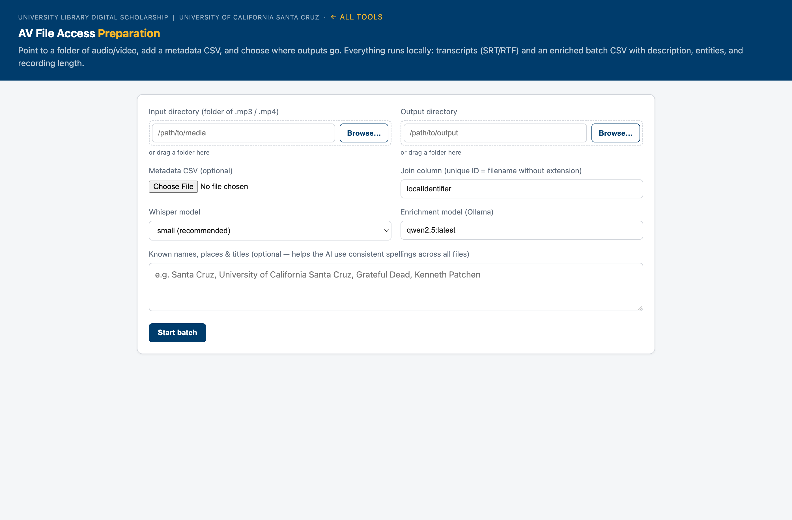

The tools
AV File Access Preparation
Transcribes a folder of audio/video, writes a content description and transcript (SRT/RTF) per file, extracts named entities, and builds one enriched metadata CSV. Recognizes and skips sung lyrics in music performances.
Data-Prep Tool
Checks a CSV or Google Sheet for quality problems, plans duplicate merges, and generates a README and data dictionary. Your original file is never modified.
Merritt Harvester
Pulls collection metadata from a private UC Merritt collection into CSV and JSON using a session cookie from your browser.
AV File Access Preparation — workflow
Point the tool at a folder of audio or video files and an optional metadata spreadsheet. It works through each file automatically and produces transcripts, descriptions, and an enriched CSV — all locally.

Click Browse to navigate to the folder of .mp3 / .mp4 files, and choose where the outputs should go. You can also drag a folder onto the field.
If you have an existing CSV, upload it. The tool matches rows to filenames by the localIdentifier column (filename without extension) and adds new columns without changing your originals. If no matching column is found, file results are appended as new rows.
Type any names, places, or titles the AI should watch for — one per line or comma-separated. These are spelling hints only; entities are only listed if they actually appear in the recording.
A progress bar tracks each file. The tool transcribes speech (skipping sung lyrics), writes SRT and RTF transcript files, and calls the local Ollama AI to extract a 3-sentence description and named entities. Results update as each file completes.
The output CSV adds these new columns to your original: duration, suggested_title, suggested_date, content_description, persons, places, music_titles, poem_titles, book_titles, transcript_status.

Sample output
Below is a representative example from a batch run against two UCSC archive recordings. The tool identified that one recording contained both speech and music and skipped the sung portions.
| localIdentifier | Status | Suggested title | Description & entities | Duration | Output files |
|---|---|---|---|---|---|
| LCD11224 | partial — music segments skipped | Celebration of Big Creek Reserve Acquisition |
The Chancellor of the University of California at Santa Cruz and other notable figures celebrate the acquisition of Big Creek Reserve by the university in partnership with the Nature Conservancy and Save the Redwoods League.
persons: Bob Sinsheimer, Ansel Adams, Kenneth Norris, Margaret Owings, Frank Barne
places: Big Creek Reserve, California, University of California at Santa Cruz, Save the Redwoods League |
— | LCD11224_transcript.srt LCD11224_transcript.rtf |
| VT577_640x480 | transcribed | Inaugural Lecture: Simulations, Stereotypes, and Post-Modern Interpretations · 1987 |
The lecture discusses Professor Gerald Vizenor's academic journey, his contributions to American Indian literature, and critiques the simulations and stereotypes of Native Americans in popular culture and academia. It also explores post-modern interpretations of tribal literatures and their significance.
persons: Gerald Vizenor
|
— | VT577_640x480_transcript.srt VT577_640x480_transcript.rtf |
Privacy and security
- All processing is local. No audio, video, or text is sent to any external service. Transcription runs on the Mac's Apple Silicon GPU via MLX Whisper. Summaries and entity extraction use a locally installed Ollama model.
- Your original files are never changed. The tool reads media files and writes new output files alongside them. Your spreadsheet is only read — a new enriched CSV is written separately.
- Runs on your own machine. The web interface is served at
http://127.0.0.1:8000— a local address only your computer can reach.
Requirements and setup
The tools run on a Mac with Apple Silicon (M1 or later). Required:
- Homebrew — brew.sh
- ffmpeg —
brew install ffmpeg - Python 3.12 (arm64) —
arch -arm64 /opt/homebrew/bin/brew install python@3.12 - Ollama — download from ollama.com, then run
ollama pull qwen2.5
Full setup instructions, including the one-time ./setup.sh script, are in the README on GitHub.